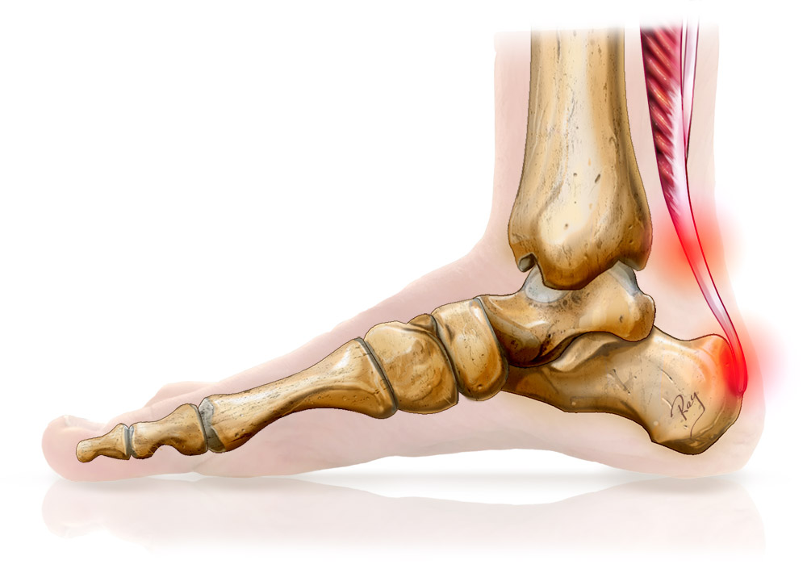
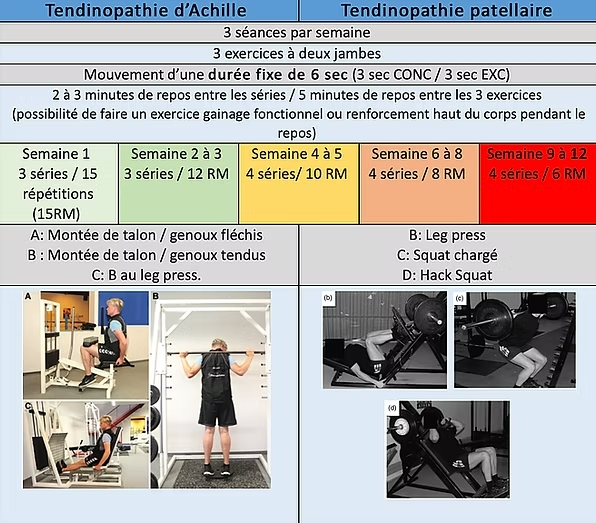

L'évolution de la prise en charge des tendinopathies : du repos au renforcement actif
Pendant des décennies, le traitement de référence d'un tendon douloureux tenait en trois mots : repos, glace et anti-inflammatoires. Aujourd'hui, la recherche en physiologie musculaire et tendineuse a balayé cette vision passive pour faire du renforcement progressif la pierre angulaire de la guérison.

1. Du paradigme « Tendinite » au modèle « Tendinopathie »
Le terme historique de « tendinite » sous-entendait la présence d'une inflammation aiguë permanente de la structure tendineuse. Or, les analyses histologiques (Khan et al., 1999) ont démontré que les tendons chroniquement douloureux ne présentent pas ou très peu de cellules inflammatoires classiques (neutrophiles, macrophages), mais plutôt une désorganisation de la trame de collagène, une hypervascularisation anarchique et une augmentation de la substance fondamentale.
C'est ainsi que la communauté scientifique a abandonné le mot tendinite au profit de **tendinopathie**, reflétant un processus de remodelage raté ou de désadaptation à la charge.
2. L'ère du protocole excentrique (Stanish & Alfredson)
Dans les années 1980 et 1990, des chercheurs pionniers comme Stanish puis Alfredson (Alfredson et al., 1998) ont révolutionné le traitement en introduisant le renforcement musculaire excentrique (freinage de la charge). Le célèbre protocole d'Alfredson pour le tendon d'Achille imposait 180 répétitions quotidiennes de travail excentrique, même en présence d'une douleur modérée.
Bien qu'efficace, ce protocole s'est révélé chronophage et parfois difficile à tolérer pour les patients en raison du volume d'exercices très élevé.
3. La révolution du Heavy Slow Resistance (HSR)
En 2009, l'équipe danoise de Kongsgaard a comparé le protocole excentrique classique d'Alfredson à un programme de **Heavy Slow Resistance (HSR)** — un renforcement combinant des phases concentriques et excentriques réalisées très lentement (3 à 4 secondes par phase) avec des charges lourdes (de 15RM à 6RM) 3 fois par semaine (Kongsgaard et al., 2009).
Les résultats ont montré une efficacité clinique équivalente, voire supérieure à long terme sur la satisfaction des patients et le remodelage de la matrice de collagène, avec une observance bien meilleure liée au rythme de 3 séances hebdomadaires.

4. Le modèle du continuum de Jill Cook & l'isométrie antalgique
En 2009 puis 2016, les professeures Jill Cook et Craig Purdam ont proposé le **modèle du continuum de la tendinopathie**, découpé en trois phases : reactive tendinopathy, tendon dysrepair et degenerative tendinopathy (Cook & Purdam, BJSM, 2016).
Ce modèle adapte la thérapeutique à l'état du tendon :
- Phase réactive / hyperalgique : privilégier les contractions **isométriques** tenues (45 secondes, 4 à 5 fois), réputées pour leur effet antalgique central immédiat (Rio et al., 2015) et l'absence de friction.
- Phase de remodelage : intégrer le renforcement lourd et lent (HSR) pour restructurer la matrice de collagène.
- Phase de stockage/restitution d'énergie : réintroduire la pliométrie et les étirements rapides avant le retour au terrain.
Références scientifiques & Littérature
- Khan KM, Cook JL, Bonar F, et al. Histopathology of common tendinopathies. Update and implications for clinical management. Sports Medicine, 1999; 27(6):393-408.
- Alfredson H, Pietilä T, Jonsson P, Lorentzon R. Heavy-load eccentric calf muscle training for the treatment of chronic Achilles tendinosis. American Journal of Sports Medicine, 1998; 26(3):360-366.
- Kongsgaard M, Kovanen V, Aagaard P, et al. Corticosteroid injections, eccentric decline squat training and heavy slow resistance training in patellar tendinopathy. Scandinavian Journal of Medicine & Science in Sports, 2009; 19(6):790-802.
- Cook JL, Purdam CR. The challenge of managing tendinopathy in competing athletes. British Journal of Sports Medicine (BJSM), 2014; 48(7):506-509.
- Rio E, Kidgell D, Purdam C, et al. Isometric exercise induces analgesia and reduces inhibition in patellar tendinopathy. British Journal of Sports Medicine (BJSM), 2015; 49(19):1277-1283.